📈 奥特曼认输：全球第一，根本不在OpenAI！
Altman concedes: Global #1 AI model is not from OpenAI
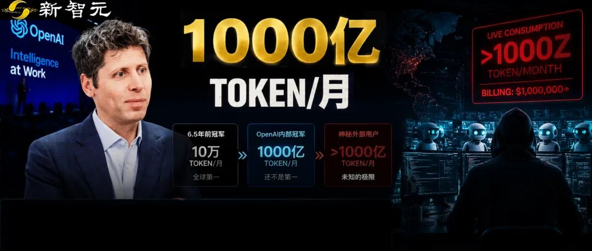
奥特曼亲口承认，OpenAI内部token消费consume[kənˈsjuːm] v. 消费冠军月烧1000亿个，还不是全球第一。
硅谷最近流行一种新的炫富flaunt[flɔːnt] v. 炫富；炫耀财富。
不比compete[kəmˈpiːt] v. 比；竞争房，不比车，比谁把AI的token烧得多。烧得越狠越光荣glory[ˈɡlɔːri] n. 光荣，活脱脱一场全员烧钱大赛。
按理说，最有资格炫的候选candidate[ˈkændɪdət] n. 候选者是OpenAI。token它自己造，成本cost[kɒst] n. 成本价随便烧。
可前两天一场直播broadcast[ˈbrɔːdkɑːst] n. 直播，CEO奥特曼自己拆了自己的台。
OpenAI内部的token消费冠军，每月消耗consumption[kənˈsʌmpʃn] n. 消耗1000亿个token。
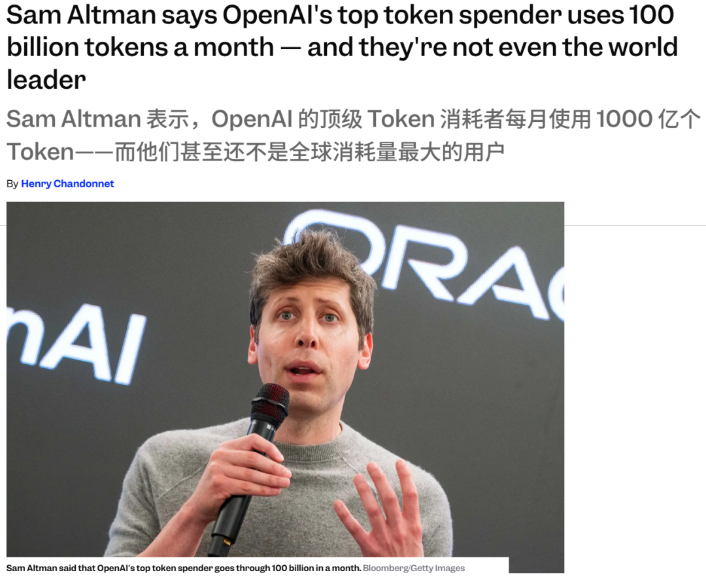
然后他补了一句话，让整个画风突变mutate[mjuːˈteɪt] v. 突变。
说来惭愧ashamed[əˈʃeɪmd] adj. 惭愧的，这还不是世界第一。我们发现discover[dɪˈskʌvə] v. 发现有人比这更多。
万万没想到，一个造manufacture[ˌmænjuˈfæktʃə] v. 制造；生产token的竟然没干过买token的。

这个1000亿有多夸张exaggerate[ɪɡˈzædʒəreɪt] v. 夸张。
六年多前，全公司烧得最猛intense[ɪnˈtens] adj. 激烈的；猛烈的的人，一个月也就10万。
从10万到1000亿，整整一百万倍。当年那个全球global[ˈɡləʊbl] adj. 全球的第一的10万，放今天只是地球上一个普通人的人均水平。
烧到这个量级magnitude[ˈmæɡnɪtjuːd] n. 量级；规模还守不住第一，OpenAI不是没努力。
token它有，自己产produce[prəˈdjuːs] v. 生产；制造的，成本价造。烧token也早早卷成了一种荣耀，有排行榜leaderboard[ˈliːdəbɔːd] n. 排行榜，谁烧得多谁脸上有光。
它甚至给客户发实体physical[ˈfɪzɪkl] adj. 实体的奖牌，叫「Tokens of Appreciation」，10亿、1000亿、1万亿，三档明码标价，烧到了就给你寄一块。麦肯锡刚集齐amass[əˈmæs] v. 积累；聚集1000亿那一块。
YC那一批创业startup[ˈstɑːtʌp] n. 初创企业公司，奥特曼大手一挥，每家白送200万美元的token，就为了看他们能烧出点什么花样。
如今，token这东西在OpenAI已经快变成发给员工的工资salary[ˈsæləri] n. 工资；薪水了。但还是没卷过那个「神秘mysterious[mɪˈstɪəriəs] adj. 神秘的人」。
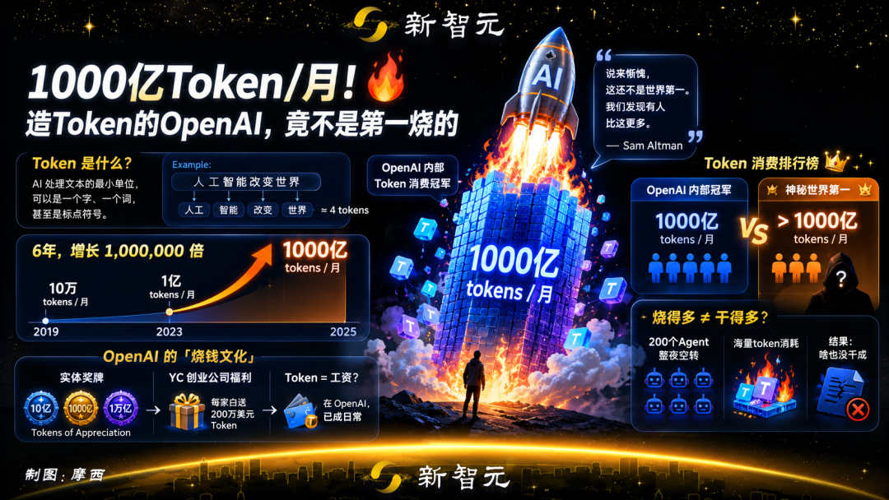

不过，先别急着膜拜worship[ˈwɜːʃɪp] v. 崇拜；膜拜这些数字。
Linear的COO Cristina Cordova在𝕏上开火，按token花费给工程师排名rank[ræŋk] v. 排名，跟她按谁花钱最多给市场团队排名有啥区别。别把高烧钱率rate[reɪt] n. 率；比率当成高成功率。
开发者Maxwell Maher说得更绝，这可能是有史以来最烂的生产力productivity[ˌprɒdʌkˈtɪvəti] n. 生产力指标。任谁都能让200个Agent整夜空转idle[ˈaɪdl] v. 空转；闲置，烧出一大堆「啥也没干成」。
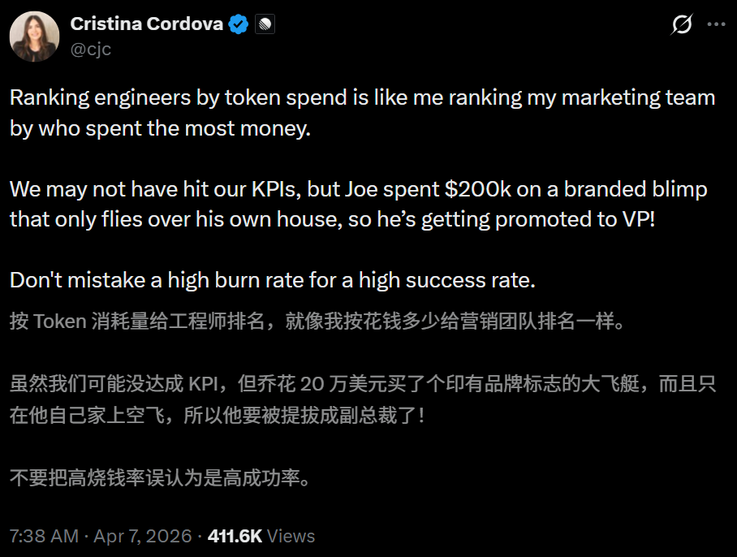
过去两个月，整个硅谷为这事吵quarrel[ˈkwɒrəl] v. 争吵翻了天。
4月，Meta内网intranet[ˈɪntrənet] n. 内网；内部网络冒出一个员工私建的排行榜，名字叫「Claudeonomics」，专按token消耗量给同事排座次。烧得多的，还能领「Token Legend」「Cache Wizard」这种花里胡哨的称号title[ˈtaɪtl] n. 称号；头衔。
于是，一个月后，整个Meta烧掉了60万亿trillion[ˈtrɪljən] n. 万亿token。
「卧龙」既出，必有「凤雏」。
栽进同一个坑pitfall[ˈpɪtfɔːl] n. 陷阱；坑里的，还有亚马逊。他们的员工为了冲榜，把prompt写得又臭又长，挂一堆Agent并行concurrent[kənˈkʌrənt] adj. 并行的；同时发生的刷，token数蹭蹭涨，活没多干一点。
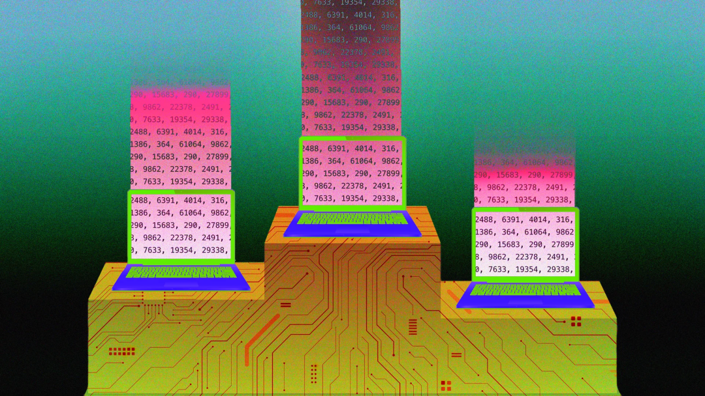
这事被端上台面surface[ˈsɜːfɪs] n. 表面；台面之后，得了个名字「tokenmaxxing」。后面那个「maxxing」，意思就是往死里堆pile[paɪl] v. 堆；堆积。
那么问题来了，用这么多token堆出来的，到底ultimately[ˈʌltɪmətli] adv. 到底；最终是生产力，还是一地鸡毛？
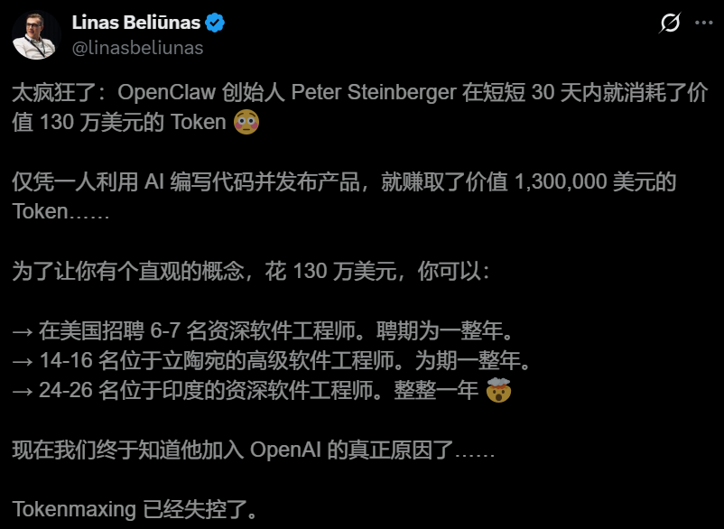

OpenAI：把会花钱的人买acquire[əˈkwaɪə] v. 收购；获取下来
想知道答案，镜头focus[ˈfəʊkəs] v. 聚焦；镜头对准需要先切到这个人身上。
5月15日，Peter Steinberger往𝕏上甩了一张截图screenshot[ˈskriːnʃɒt] n. 截图。
他的OpenAI后台，过去30天，账单invoice[ˈɪnvɔɪs] n. 账单停在$1,305,088.81。6030亿token，760万次请求request[rɪˈkwest] n. 请求，背后100个Codex实例昼夜不停。
这130万，他一分钱没掏disburse[dɪsˈbɜːs] v. 支付；掏钱。今年2月他进了OpenAI，从那以后，烧expend[ɪkˈspend] v. 花费；消耗多少都是公司的钱。
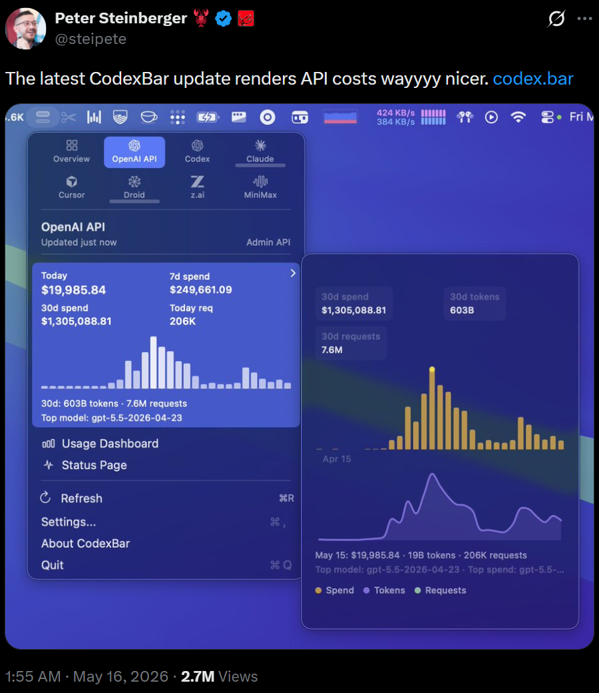
一边把烧token玩成了KPI游戏game[ɡeɪm] n. 游戏，一边把它烧成了真东西。
对于OpenAI来说，token他们自己产，从来不缺lack[læk] v. 缺乏。缺的是会用token的脑子intellect[ˈɪntəlekt] n. 智力；头脑。
这事儿，用Peter自己的话解释explain[ɪkˈspleɪn] v. 解释得最清楚：
大家都在为我的账单抓狂frantic[ˈfræntɪk] adj. 疯狂的；抓狂的。但没人看到的是，真正让我兴奋的问题是，如果token成本不再是限制constraint[kənˈstreɪnt] n. 限制；约束，未来的软件该怎么造？
他那100个Codex不是挂着空转刷grind[ɡraɪnd] v. 刷；苦干排名的。扫安全漏洞vulnerability[ˌvʌlnərəˈbɪləti] n. 漏洞；脆弱性、审PR、去重issue、写修复，全天候在干活。这不是tokenmaxxing，这是一台吞devour[dɪˈvaʊə] v. 吞；吞噬token的机器在替他造东西。
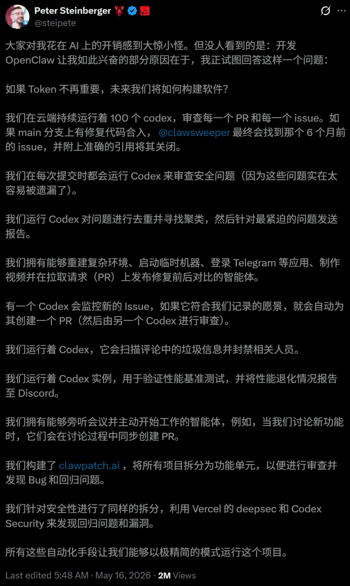
这种人有多稀缺scarce[skeəs] adj. 稀缺的，看个细节。
Peter那130万，跑的是Codex「Fast Mode」的价，关掉快速模式mode[məʊd] n. 模式，同样的活只要30万。
哪怕按30万算，平均average[ˈævərɪdʒ] adj. 平均的一个Agent一个月也得3000美元。
对比一下，一份200美元的Codex Pro订阅subscription[səbˈskrɪpʃn] n. 订阅，一个月也就值五六千美元的API额度。
Peter光非快速模式那部分，就顶得上六十份顶配premium[ˈpriːmiəm] adj. 顶配的；高级的订阅。
OpenAI把这种人买进来，还高调替他付钱，本身就是一条广告，告诉外面所有开发者，未来的工作流workflow[ˈwɜːkfləʊ] n. 工作流是要烧海量算力的，不是省着用。

说回最初initial[ɪˈnɪʃl] adj. 最初的那个问题。一家公司未来的能力capability[ˌkeɪpəˈbɪləti] n. 能力，到底押在什么上。
这不是虚hollow[ˈhɒləʊ] adj. 空的；虚的题。再过两年，每家公司都得做同一道选择option[ˈɒpʃn] n. 选择题，钱是砸在更多token上，还是砸在更会花token的人和系统上。
直觉intuition[ˌɪntjuˈɪʃn] n. 直觉答案是，押在token上。谁算力compute[kəmˈpjuːt] n. 算力；计算能力多、token便宜，谁就强。
英伟达nvidia[ɪnˈvɪdiə] n. 英伟达（NVIDIA）CEO黄仁勋就是这么想的。他在播客podcast[ˈpɒdkɑːst] n. 播客上放话，一个年薪50万美元的工程师，一年要是没烧掉至少25万美元的token，他会「深感不安」。
LinkedIn创始人founder[ˈfaʊndə] n. 创始人Reid Hoffman、YC CEO Garry Tan都站这队，Tan的原话是「我们tokenmaxxing比大多数人都早」。连谷歌google[ˈɡuːɡl] n. 谷歌（Google）CEO Sundar Pichai都在Google I/O上把这词拎出来讲。
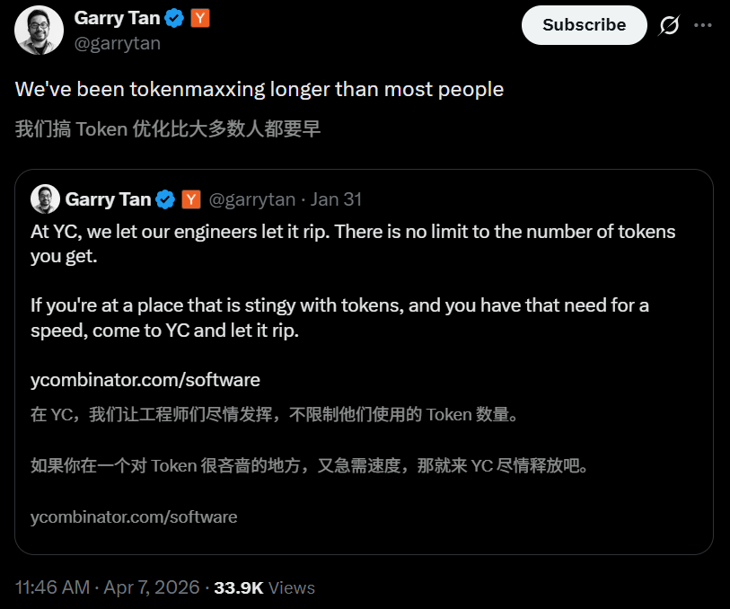
可两边都只说对了一半。
烧得多的人不一定强，这是质疑question[ˈkwestʃən] v. 质疑；怀疑派对的。但能把海量token花出价值value[ˈvæljuː] n. 价值的人确实强，这是老黄们对的。
把这两半拼combine[kəmˈbaɪn] v. 拼合；组合起来，答案就清楚了。
决定能力的，从来不是你能拿到多少token，是你有没有一套把token花出去的系统system[ˈsɪstəm] n. 系统。
Peter值钱，不在于他烧得起，在于他造了龙虾这台能吞6000多亿token的机器machine[məˈʃiːn] n. 机器。
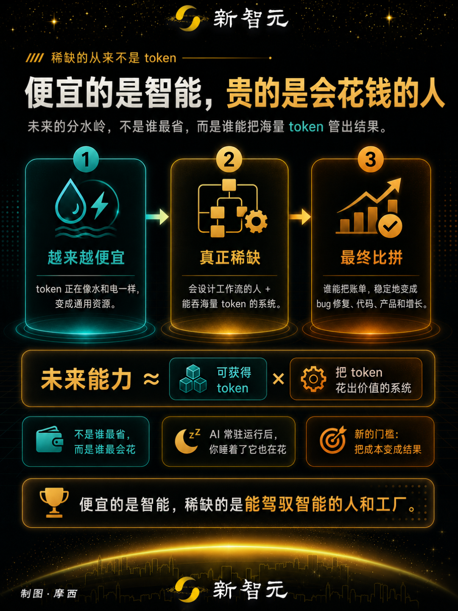
便宜的是智能intelligence[ɪnˈtelɪdʒəns] n. 智能，贵的是会花钱的人
而烧钱这事，才刚开始提速accelerate[əkˈseləreɪt] v. 加速。
奥特曼在同一场直播里放了话，下一站是「常驻persistent[pəˈsɪstənt] adj. 常驻的；持久运行的、主动运行的AI」，不用你开口，它自己在后台跑。
当一个人能指挥上百个Agent昼夜连轴转，烧token这件事就跟公司大小彻底脱钩decouple[diːˈkʌpl] v. 脱钩；解耦了。
一个铁了心的个人，能轻松烧过一整间实验室laboratory[ləˈbɒrətri] n. 实验室。Peter已经当众证明prove[pruːv] v. 证明过一次。
对企业来说，这才是真正头疼headache[ˈhedeɪk] n. 头疼；令人头疼的事的地方。
AI开始不用提示prompt[prɒmpt] n. 提示；提示词自己跑之后，成本不再是你点一下花一点。你睡着了，它还在花。
能把这种永不停机的智能管出价值，而不只是一张吓死人的账单，成了新的分水岭watershed[ˈwɔːtəʃed] n. 分水岭；转折点。
到那天，会花钱的人值多少，只会比现在更离谱absurd[əbˈsɜːd] adj. 离谱的；荒谬的。
https://www.businessinsider.com/sam-altman-openai-top-token-spender-ai-costs-issue-2026-6

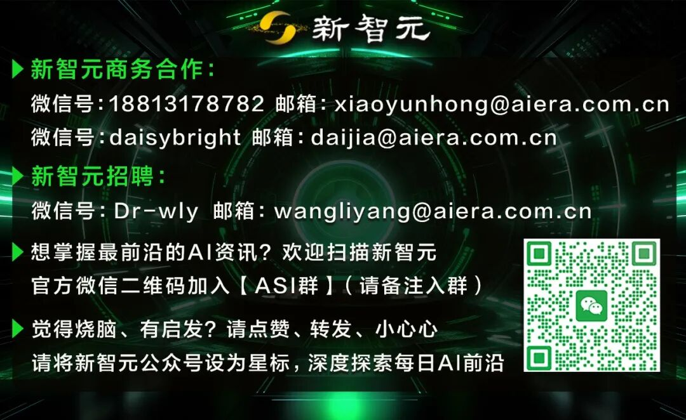